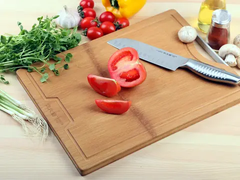
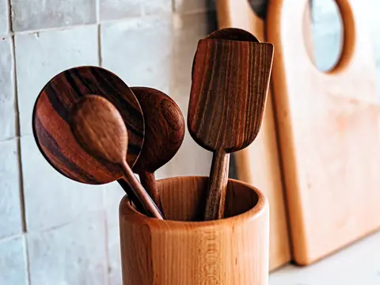
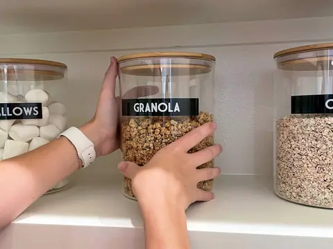
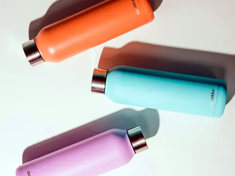
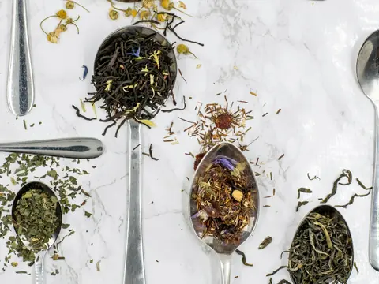
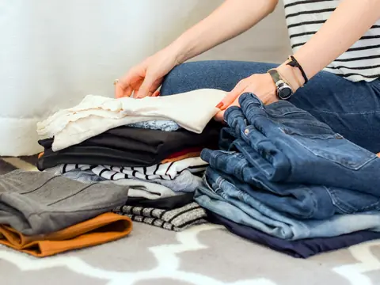
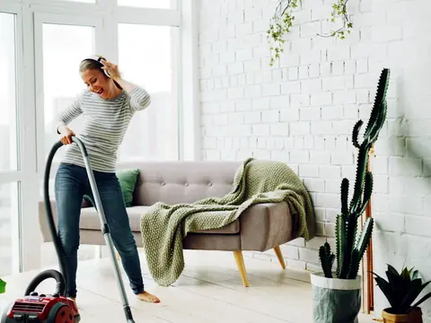

Plastic Swap
Eight swaps that cut the plastic in your home. Check each one off as you make it, and tap a product to open it on Amazon.







Sources: Consumer Reports, 2024 and 2025; American Academy of Pediatrics, 2018; UW Medicine; Yadav et al., 2023; Hussain et al., 2023; Qian et al., 2024; Hernandez et al., 2019; Napper and Thompson, 2016; Center for Environmental Health, 2022; Soltani et al., 2021. Full list and research at odyssey-jotun.github.io/plastic-swap